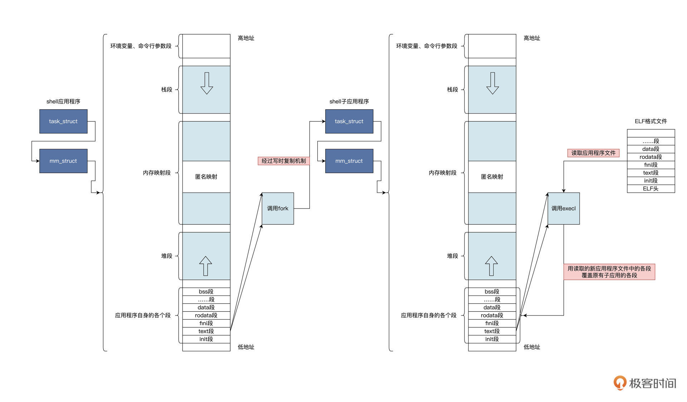
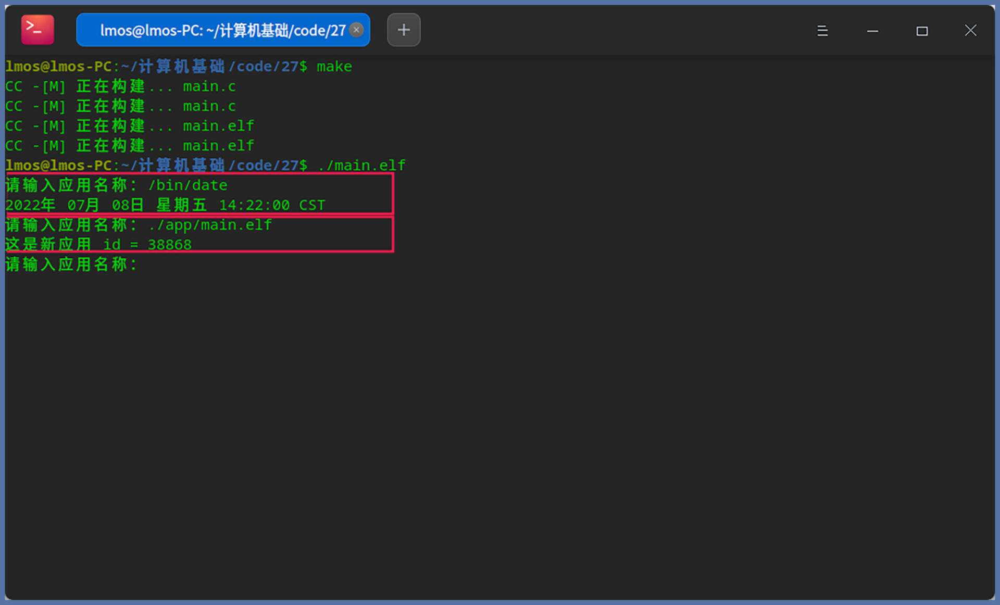
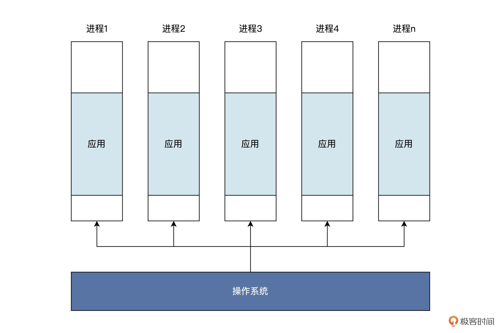
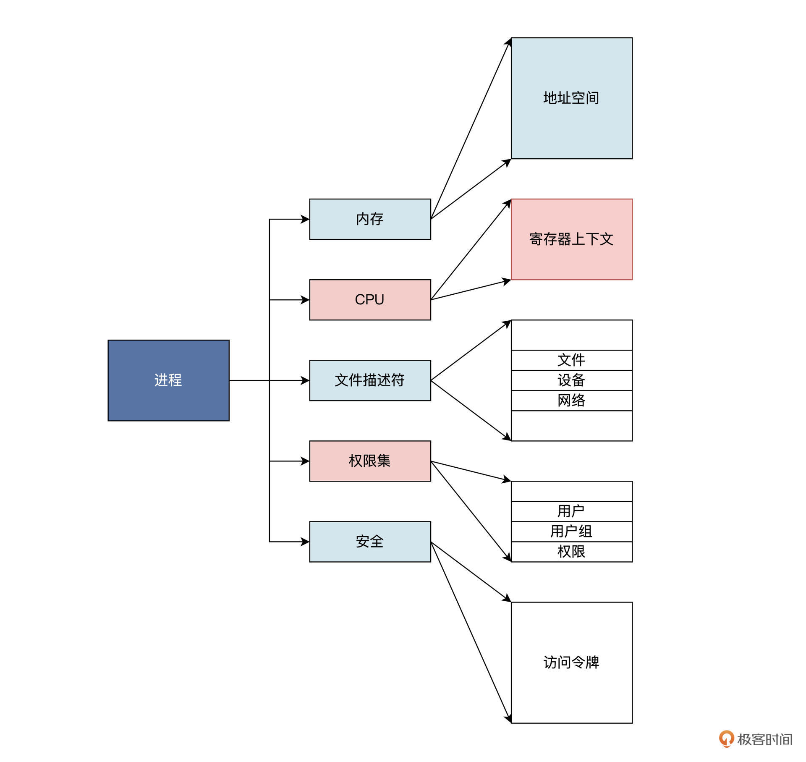
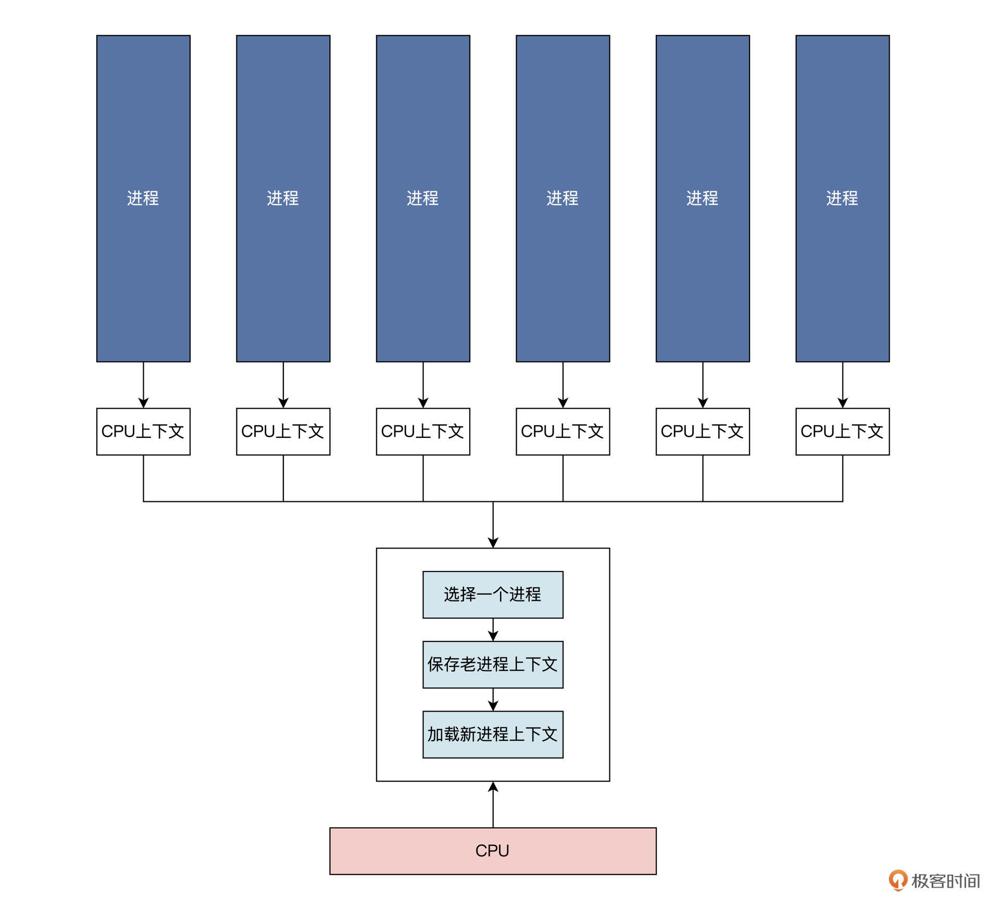
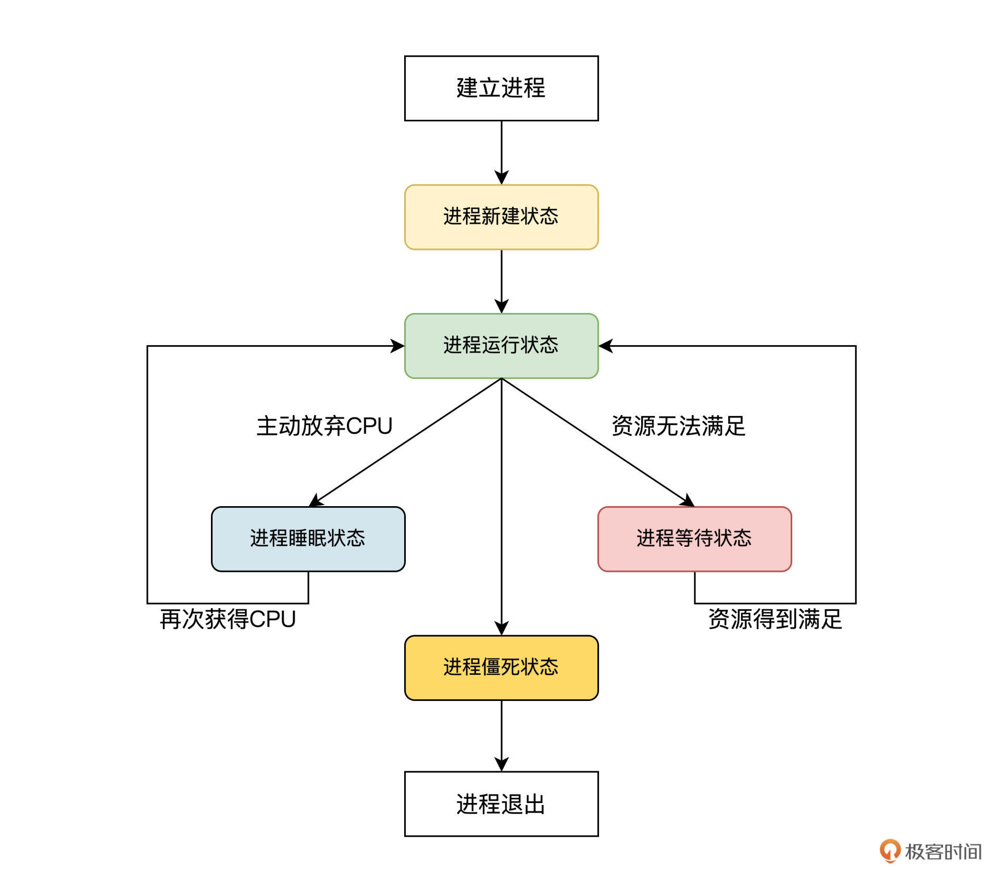
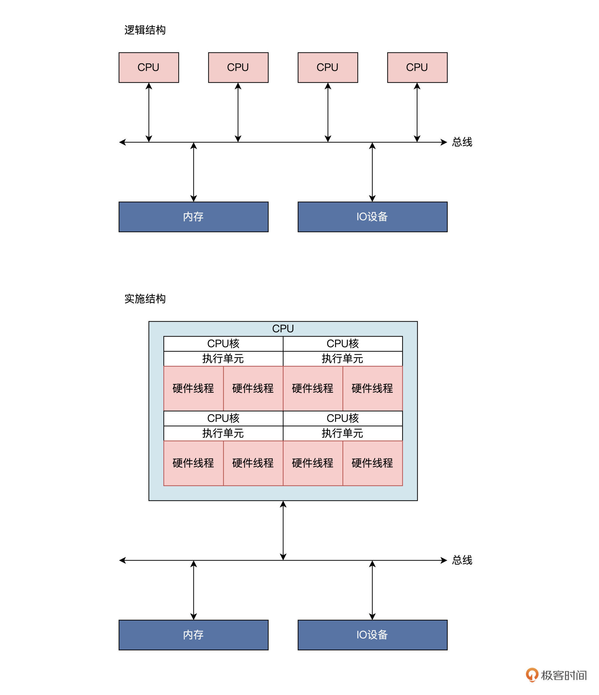
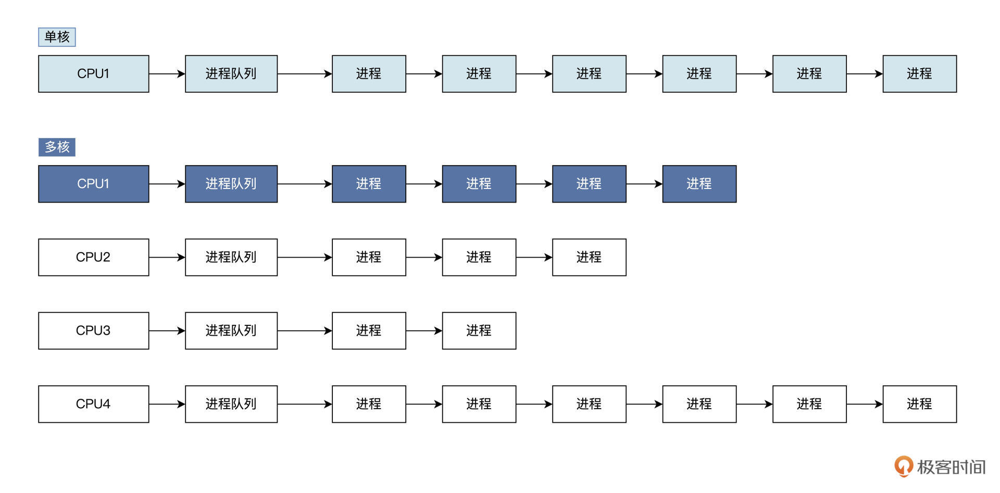
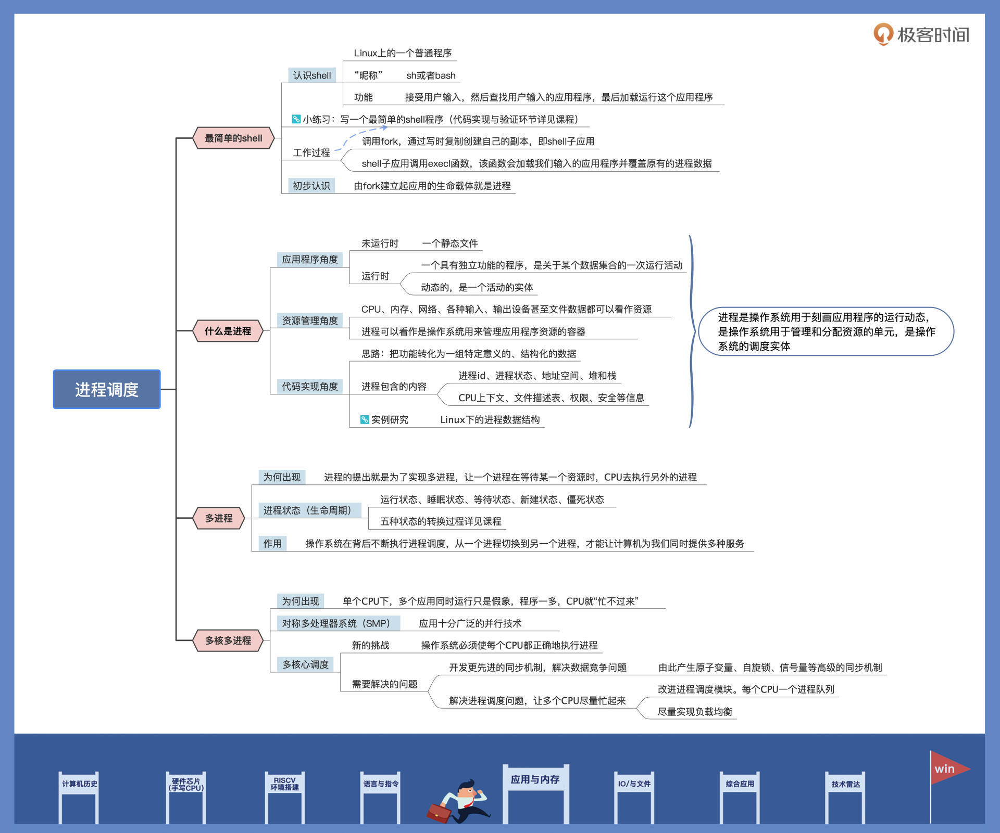

- 00 开篇词 练好基本功，优秀工程师成长第一步.md.html
- 01 CISC & RISC：从何而来，何至于此.md.html
- 02 RISC特性与发展：RISC-V凭什么成为“半导体行业的Linux”？.md.html
- 03 硬件语言筑基（一）：从硬件语言开启手写CPU之旅.md.html
- 04 硬件语言筑基（二）_ 代码是怎么生成具体电路的？.md.html
- 05 指令架构：RISC-V在CPU设计上到底有哪些优势？.md.html
- 06 手写CPU（一）：迷你CPU架构设计与取指令实现.md.html
- 07 手写CPU（二）：如何实现指令译码模块？.md.html
- 08 手写CPU（三）：如何实现指令执行模块？.md.html
- 09 手写CPU（四）：如何实现CPU流水线的访存阶段？.md.html
- 10 手写CPU（五）：CPU流水线的写回模块如何实现？.md.html
- 11 手写CPU（六）：如何让我们的CPU跑起来？.md.html
- 12 QEMU：支持RISC-V的QEMU如何构建？.md.html
- 13 小试牛刀：跑通RISC-V平台的Hello World程序.md.html
- 14 走进C语言：高级语言怎样抽象执行逻辑？.md.html
- 15 C与汇编：揭秘C语言编译器的“搬砖”日常.md.html
- 16 RISC-V指令精讲（一）：算术指令实现与调试.md.html
- 17 RISC-V指令精讲（二）：算术指令实现与调试.md.html
- 18 RISC-V指令精讲（三）：跳转指令实现与调试.md.html
- 19 RISC-V指令精讲（四）：跳转指令实现与调试.md.html
- 20 RISC-V指令精讲（五）：原子指令实现与调试.md.html
- 21 RISC-V指令精讲（六）：加载指令实现与调试.md.html
- 22 RISC-V指令精讲（七）：访存指令实现与调试.md.html
- 23 内存地址空间：程序中地址的三种产生方式.md.html
- 24 虚实结合：虚拟内存和物理内存.md.html
- 25 堆&栈：堆与栈的区别和应用.md.html
- 26 延迟分配：提高内存利用率的三种机制.md.html
- 27 应用内存管理：Linux的应用与内存管理.md.html
- 28 进程调度：应用为什么能并行执行？.md.html
- 29 应用间通信（一）：详解Linux进程IPC.md.html
- 30 应用间通信（二）：详解Linux进程IPC.md.html
- 31 外设通信：IO Cache与IO调度.md.html
- 32 IO管理：Linux如何管理多个外设？.md.html
- 33 lotop与lostat命令：聊聊命令背后的故事与工作原理.md.html
- 34 文件仓库：初识文件与文件系统.md.html
- 35 Linux文件系统（一）：Linux如何存放文件？.md.html
- 36 Linux文件系统（二）：Linux如何存放文件？.md.html
- 37 浏览器原理（一）：浏览器为什么要用多进程模型？.md.html
- 38 浏览器原理（二）：浏览器进程通信与网络渲染详解.md.html
- 39 源码解读：V8 执行 JS 代码的全过程.md.html
- 40 内功心法（一）：内核和后端通用的设计思想有哪些？.md.html
- 41 内功心法（二）：内核和后端通用的设计思想有哪些？.md.html
- 42 性能调优：性能调优工具eBPF和调优方法.md.html
- 先睹为快：迷你CPU项目效果演示.md.html
- 加餐01 云计算基础：自己动手搭建一款IAAS虚拟化平台.md.html
- 加餐02 学习攻略（一）：大数据&云计算，究竟怎么学？.md.html
- 加餐03 学习攻略（二）：大数据&云计算，究竟怎么学？.md.html
- 加餐04 谈谈容器云与和CaaS平台.md.html
- 加餐05 分布式微服务与智能SaaS.md.html
- 国庆策划01 知识挑战赛：检验一下学习成果吧！.md.html
- 国庆策划02 来自课代表的学习锦囊.md.html
- 国庆策划03 揭秘代码优化操作和栈保护机制.md.html
- 温故知新 思考题参考答案（一）.md.html
- 用户故事 我是怎样学习Verilog的？.md.html
- 结束语 心若有所向往，何惧道阻且长.md.html
- 捐赠
28 进程调度：应用为什么能并行执行？
你好，我是LMOS。
你知道为什么在计算机上，我们能一边听着音乐，一边刷着网页，顺便还能跟朋友畅聊天下大事吗？这得益于计算机里的各种应用，更得益于支撑各种应用同时运行的操作系统。那么操作系统为什么能同时运行多个应用，具体是用什么机制让多个应用并行执行呢？
这节课我们来一起探索前面这两个问题的答案。我会带你先从最简单的shell开始，了解一个应用的运行过程，然后和你聊聊进程的本质，以及它的“生老病死”，最后再给你讲讲多进程调度是怎么回事儿。
这节课的配套代码，你可以从这里下载。
最简单的shell
为什么要先从shell开始了解呢？因为熟悉了它，你才能知道Linux上怎么运行一个应用程序，才能明白Linux内部怎么表示一个正在运行的应用程序。
通常情况下，我们在Linux上运行程序，都是在终端下输入一个命令，这个命令其实大部分都是Linux系统里相应应用程序的文件名。
而终端也是Linux系统上一个普通的应用程序，从UNIX开始它就叫shell，但是shell只是一个别名，在你的系统上，它的文件名可能是sh，也可能是bash。shell实现的功能有别于其它应用，它的功能是接受用户输入，然后查找用户输入的应用程序，最后加载运行这个应用程序。
shell的机制里只用到了两个系统调用——fork和execl，我给你画了一张示意图展示其中的逻辑：

结合图片我们可以发现，shell应用首先调用了fork，通过写时复制（写时复制的机制可以回顾[第二十六节课]），创建了一个自己的副本，我们暂且称为shell子应用。
然后，shell子应用中调用了execl，该函数会通过文件内容重载应用的地址空间，它会读取应用程序文件中的代码段、数据段、bss段和调用进程的栈，覆盖掉原有的应用程序地址空间中的对应部分。而且execl函数执行成功后不会返回，而是会调整CPU的PC寄存器，从而执行新的init段和text段。从此，一个新的应用就产生并开始运行了。
我们照此逻辑，写一个最简单的shell感受一下，代码如下所示：
int run(char* cmd)
{
pid_t pid;
int rets;
//建立子进程
pid = fork();
if(pid > 0)
{ //等待子进程退出
wait(&rets);
}
else if(pid == 0)
{ //新进程加载新应用
if(execl(cmd, cmd, NULL) == -1)
{
printf("未找到该应用\n");
exit(0);
}
}
return 0;
}
int shell_run()
{
char instr[80];
while(1)
{
printf("请输入应用名称：");
//获取用户输入
scanf("%[^\n]%*c", instr);
//判断是exit就退出
if(strncmp("exit", instr, 4) == 0)
{
return 0;
}
//执行命令
run(instr);
}
return 0;
}
int main()
{
return shell_run();
}
可以看到，上述代码shell_run函数中循环读取用户输入，然后调用run函数，在run函数中fork建立子进程。如果子进程建立成功，子进程最初和父进程执行相同的代码，当子进程进入执行时会调用execl系统调用，加载我们输入的应用程序并覆盖原有的进程数据，这就是一个新进程诞生的过程。- 写完代码以后，别忘了代码验证环节。为了证明我们这个shell是正确的，我们要在当前工程目录下建立一个子目录app，在app目录写个main.c文件作为新应用，并在其中写下后面这段代码。
#include <stdio.h>
#include <stdlib.h>
#include <unistd.h>
int main()
{
printf("这是新应用 id = %d\n", getpid());
return 0;
}
我们在终端中切换到该工程目录下，执行make就编译好了。然后，就可以借助这个终端（shell）加载我们的shell，如下图所示：- 
对照截图，我来说明一下验证过程。首先执行make编译，然后加载我们的shell。第一次我们使用系统中的date命令进行测试，该命令会输出当前日期和时间。我们看到，上图中显示的是正确的；第二次我们使用自己的应用测试，如上图中的输出，正是我们应用程序运行之后的结果。
好，我们一起开发了一个简单shell。通过动手练习，相信你已经对一个应用的运行过程有了初步了解：由fork建立起应用的生命载体，也就是接下来要讲的进程；由execl来建筑应用程序的血肉，也就是用新的应用程序的数据覆盖进程的地址空间。
什么是进程
什么是进程呢？进程这个概念可以追溯到上世纪60年代初，是麻省理工学院的MULTICS操作系统下提出并引入的。概念是对事物本质的抽象，那么进程到底是对何种事物本质的抽象呢？
想要解决这个问题，需要我们综合多个视角来理解进程，才能得出一个全面、客观的判断。下面我们从应用程序、资源管理和代码实现这三个角度分别来探讨。
应用程序角度
从我们前面实现的极简shell过程来看，进程像极了操作系统制作的一个盒子。这个盒子能装下一个应用程序的指令和数据，而应用程序只能在这个盒子里做一些简单的工作，盒子之外的工作就要请示操作系统介入，并代替应用去完成相应的工作了。
这种盒子操作系统可以制作很多，不同应用各自使用自己的盒子，也可以让操作系统内部使用多个盒子装入同一个应用。其逻辑结构如下图所示：

我们知道应用程序由源代码编译而成，没有运行之前它是一个文件，直到它被装入内存中运行、操作数据执行相应的计算，完成相应的输入输出。从这个层面来看，进程不仅仅类似一个盒子或者容器，更像是一个具有独立功能的程序，是关于某个数据集合的一次运行活动。也就是说，运行状态的进程是动态的，是一个活动的实体。
理论上，操作系统能制造无数个叫作进程的盒子，装入无数道应用程序运行。然而理想是美好的，现实是骨感的，制造进程需要消耗系统资源，比如内存。下面我们就从资源角度继续看看进程是什么。
资源管理角度
在计算机中，CPU、内存、网络、各种输入、输出设备甚至文件数据都可以看成是资源，操作系统就是这些资源的管理者。
应用程序要想使用这些“资本”，就要向操作系统申请。比方说，应用程序占用了多少内存，使用了多少网络链接和通信端口，打开多少文件等，这些使用的资源通通要记录在案。记录在哪里比较合适呢？当然是代表一个应用程序的活动实体——进程之中最为稳妥。
由此，我们推导出一个运行中的应用程序包含了它分配到的内存，通常包括虚拟内存的一个区域。
我们梳理一下这个区域里存放了哪些内容：
- 可运行代码；
- 保存该应用程序运行时中途产生的数据，比如输入、输出、调用栈、堆；
- 分配给该应用程序的文件描述表、数据源和数据终端；
- 安全特性，即操作系统允许该应用程序进行的操作，比如应用程序拥有者、应用程序的权限集合。
- 处理寄存器、MMU页表内容；
- ……- 我还画了一张逻辑结构示意图，如下所示：

结合上图我们发现，进程可以看作操作系统用来管理应用程序资源的容器，通过进程就能控制和保护应用程序。看到这，你可能又产生了疑问，一个进程记录了一个应用运行过程中需要用到的所有资源，那操作系统到底是通过什么样的机制来实现这一点呢？
代码实现角度
在计算机的世界中，不管实现何种功能或者逻辑，首先都要把功能或者逻辑进行数理化，变成一组特定意义的数据，然后把这组数据结构化、实例化，这是实现功能和逻辑的手段和方法。
回到进程的主题上，如果让你实现进程这一功能，你该怎么做呢？
你首先会想到，进程包含了什么。刚刚资源管理角度我们分析过，进程包含进程id（用于标识）、进程状态、地址空间（用于装载应用程序的代码和数据），还有堆和栈、CPU上下文（用于记录进程的执行过程）、文件描述表（用于记录进程使用了哪些资源，记住资源也可以抽象为文件）、权限、安全等信息。
现在，我们需要把这些信息汇总，变成一个数据结构中的各种字段，或者子数据结构。这个数据结构和许多子数据结构组合在一起，就可以代表一个进程了。
眼见为实，我们这就来看看Linux的进程数据结构，如下所示：
struct task_struct {
struct thread_info thread_info;//处理器特有数据，CPU上下文
volatile long state; //进程状态
void *stack; //进程内核栈地址
refcount_t usage; //进程使用计数
int on_rq; //进程是否在运行队列上
int prio; //动态优先级
int static_prio; //静态优先级
int normal_prio; //取决于静态优先级和调度策略
unsigned int rt_priority; //实时优先级
const struct sched_class *sched_class;//指向其所在的调度类
struct sched_entity se;//普通进程的调度实体
struct sched_rt_entity rt;//实时进程的调度实体
struct sched_dl_entity dl;//采用EDF算法调度实时进程的调度实体
struct sched_info sched_info;//用于调度器统计进程的运行信息
struct list_head tasks;//所有进程的链表
struct mm_struct *mm; //指向进程内存结构
struct mm_struct *active_mm;
pid_t pid; //进程id
struct task_struct __rcu *parent;//指向其父进程
struct list_head children; //链表中的所有元素都是它的子进程
struct list_head sibling; //用于把当前进程插入到兄弟链表中
struct task_struct *group_leader;//指向其所在进程组的领头进程
u64 utime; //用于记录进程在用户态下所经过的节拍数
u64 stime; //用于记录进程在内核态下所经过的节拍数
u64 gtime; //用于记录作为虚拟机进程所经过的节拍数
unsigned long min_flt;//缺页统计
unsigned long maj_flt;
struct fs_struct *fs; //进程相关的文件系统信息
struct files_struct *files;//进程打开的所有文件
struct vm_struct *stack_vm_area;//内核栈的内存区
};
代码中struct开头的结构都属于进程的子数据结构。task_struct数据结构非常巨大，为了帮你掌握核心思路，我省略了进程的权限、安全、性能统计等相关内容，有近 500 行代码，你如果有兴趣，可以点击这里自行阅读。这里你只需要明白，在内存中，一个 task_struct 结构体的实例变量代表一个 Linux 进程就行了。- 接下来，我们也瞧一瞧Linux里表示进程内存空间的数据结构，也就是在task_struct中mm指针指向的数据结构，如下所示：
struct mm_struct {
struct vm_area_struct *mmap; //虚拟地址区间链表VMAs
struct rb_root mm_rb; //组织vm_area_struct结构的红黑树的根
unsigned long task_size; //进程虚拟地址空间大小
pgd_t * pgd; //指向MMU页表
atomic_t mm_users; //多个进程共享这个mm_struct
atomic_t mm_count; //mm_struct结构本身计数
atomic_long_t pgtables_bytes;//页表占用了多个页
int map_count; //多少个VMA
spinlock_t page_table_lock; //保护页表的自旋锁
struct list_head mmlist; //挂入mm_struct结构的链表
//进程应用程序代码开始、结束地址，应用程序数据的开始、结束地址
unsigned long start_code, end_code, start_data, end_data;
//进程应用程序堆区的开始、当前地址、栈开始地址
unsigned long start_brk, brk, start_stack;
//进程应用程序参数区开始、结束地址
unsigned long arg_start, arg_end, env_start, env_end;
};
不难发现，mm_struct结构中包含了应用程序的代码区、数据区、堆区、栈区等各区段的地址和大小，其中的 vm_area_struct 结构，是用来描述一段虚拟地址空间的。mm_struct 结构中也包含了 MMU 页表相关的信息。
其它数据结构我们就不继续跟踪下来了，有兴趣的同学可以自行阅读Linux代码。这里带你观察源码的目的，只是为了让你感受一下从抽象概念转化到数据结构的过程，从而明白进程是什么——进程在开发人员眼里就是一堆数据结构。
多个进程
我们试想一下，如果整个计算机上只运行一道应用程序。我们是不是需要进程这个东西？答案是否定的，因为此时所有的计算机资源，比如CPU，内存、IO设备、网络，都归这一道应用程序独享。在这种情形下，是不需要有进程这种东西的。
但是实际情况是一个应用程序不会同时用到系统中所用资源，这就导致单个应用程序对系统资源使用效率不高的问题，最常见的情况是CPU，你可以回想一下开头的shell。在shell中，CPU的速度远大于我们输入命令的速度，所以此时CPU必须等待我们的键盘输入。
其实不仅仅是等待键盘，CPU还可能在等待磁盘、等待网络、等待声卡，具体在等什么取决于应用程序要申请什么资源。既然CPU“工作量”不饱和，这个等待的时间，我们可不可以让CPU去执行别的应用程序呢？
这当然是可行的，于是进程这玩意开始提上日程，进程的提出就是为了实现多进程，让一个进程在等待某一个资源时，CPU去执行另外的进程。我们来画一幅图展示这个过程，如下所示：

可以看到，每个进程都有自己的CPU上下文，来保护进程的执行状态和轨迹。我们选择一个进程，对其CPU上下文保存和加载，这样就实现了进程的调度，进而演化出各种进程调度算法，调度算法的细节我们这里就不详细讨论了，先把进程调度的关键思路梳理清楚。
进程调度涉及到给进程设置相应的状态，我们看看通常进程有哪些状态。人有生老病死，进程也是一样。一个进程从建立到运行，还可能因为资源问题不得不暂停运行，最后进程还要退出系统。这些过程，我们称为进程的生命周期。
在系统实现中，通常用进程的状态来表示进程的生命周期。进程通常有五种状态，分别是运行状态、睡眠状态、等待状态、新建状态、僵死状态。其中进程僵死状态，表示进程将要退出系统，不再进行调度。
那么进程的各种状态之间是如何转换的呢？别急，我画一幅图解释一下，如下所示：

上图中已经为你展示了，从进程建立到进程退出过程里，系统各状态之间的转换关系和需要满足的条件。
讲到这，我们就明白了计算机为什么能让我们同时听音乐、聊微信、刷网页了，这正是因为操作系统在背后不断执行进程调度，从一个进程切换到另一个进程。
因为切换的速度很快，而且CPU运行速度远高于其他设备的速度，才会造成多个应用同时运行的假象。单CPU多进程的前提下，一个进程不得不停下来，等待CPU执行完其他进程，再处理自己的请求，实际上同一时刻还是只有一个进程在运行。
多核多进程
时至今日，市面上的软件数以百万计，用户常用的软件也有成十上百了，能同时运行，高效率完成各种工作。可是当系统中可运行的进程越来越多，CPU又只有一个，这时CPU开始吃不消了，CPU只好在各种可运行进程间来回切换，累得满头大汗。哪怕加大风扇，机器依然持续发热，但我们仍然感觉电脑很慢，有的程序失去响应，甚至开始卡顿。
对称多处理器系统
这时硬件工程师们也意识到了问题，并着手解决，他们开始提升单颗CPU的频率，但收益不大，而且频率还有上限，不能无限提升。
于是，工程师开始聚焦在并行计算上，让多个进程能真正并行运行起来，不是像从前那样一个进程运行一小段时间，轮流着来。他们不再琢磨怎样提升频率，而是开始拼装CPU，把多颗相同的CPU封装在一起，形成多核CPU，这就是著名的SMP，即对称多处理器系统。
SMP是一种应用十分广泛的并行技术，它在一个计算机上汇集了一组处理器（多CPU），各CPU之间共享内存以及总线结构。SMP系统的逻辑结构和实施结构如下图所示：
我画的是典型的4核8线程CPU结构，请注意上图中的实施结构，更接近于真实的情况。一个芯片上封装了四个CPU内核，每个CPU内核都有具有相同功能的执行单元；在一个执行单元上实现了两个硬件线程，这里硬件线程就是一套独立的寄存器，由执行单元调度，就像是操作系统调度进程。只是这里由硬件完成，软件开发人员不知道，操作系统开发者只感觉到这是一颗逻辑CPU，可以用来执行程序。
多核心调度
SMP系统的出现，对应用软件没有任何影响，因为应用软件始终看到是一颗CPU，然而这却给操作系统带来了麻烦，操作系统必须使每个CPU都正确地执行进程。
我们来看看操作系统都需要解决哪些问题？
首先，操作系统要开发更先进的同步机制，解决数据竞争问题。之前同一时刻下只有一个CPU能运行进程，对系统中的全局数据的读写，没有任何竞争问题，现在不同了，同一时间下有多个CPU能执行进程。比如说，CPU1执行的进程读写全局数据A时，同时CPU2执行进程也在读写全局数据A，这就是读写竞争问题，会导致数据A状态不一致，进而引发更为致命的错误。
为解决这样的问题，操作系统就要开发出原子变量、自旋锁、信号量等高级的同步机制。用这些锁对全局数据进行保护，确保同一时刻只有一个进程读写数据。
解决了数据竞争问题之后，我们还得解决进程调度问题，这就需要使得多个CPU尽量忙起来，否则多核还是等同于单核。让CPU忙起来的方法很简单，就是让它们不停地运行进程，要让每个CPU都有“吃不消”的感觉。
为此，操作系统需要对进程调度模块进行改造。单核CPU一般使用全局进程队列，系统所有进程都挂载到这个队列上，进程调度器每次从该队列中获取进程让CPU执行。多核下如果使用全局队列需要同步，会导致性能下降，所以多核下一般是每个CPU核心一个队列，如下图所示：

多核心系统下，每个CPU一个进程队列，虽然提升了进程调度的性能，但同时又引发了另一个问题——每个CPU的压力各不相同。这是因为进程暂停或者退出，会导致各队列上进程数量不均衡，有的队列上很少或者没有进程，有的队列上进程数量则很多，间接地出现一部分CPU太忙吃不消，而其他CPU太闲（处于饥饿空闲状态）的情况。
怎么解决呢？这就需要操作系统时时查看各CPU进程队列上的进程数量，做出动态调整，把进程多的队列上的进程迁移到较少进程的队列上，使各大进程队列上的进程数量尽量相等，使CPU之间能为彼此分担压力。这就叫负载均衡，这种机制能提升系统的整体性能。
进程调度看似简单，就是选择一个进程投入运行，但里面却有很多利害关系。要知道，有些进程很重要，需要先运行；有些进程对时间要求很高，一旦到点就要运行；有的进程是IO型的，需要及时响应；有的进程是计算型，需要提高吞吐量。这些问题想通过调度算法解决好，是非常复杂的，你想了解更多的话，可以参考我的上一季课程《操作系统实战45讲》中[Linux进程调度的详细讲解]。
我们从加载应用的shell入手，讨论了进程是什么，再从单个进程到多个进程，最后还聊到了多核心多进程。看到这里，我们明白了正是因为进程的存在，操作系统才能并发执行多个应用。现在我们概括一下“进程”到底是什么：进程是操作系统用于刻画应用程序的运行动态，是操作系统用于管理和分配资源的单元，是操作系统的调度实体。
重点回顾
学完这节课，我们揭开了计算机支持我们同时刷网页、听音乐和聊微信背后的故事。操作系统支持并行执行应用程序，而并行执行依赖于进程概念的提出和实现。
现在，我为你系统总结一下进程的特性，给今天的课程画一个圆满的句号。
进程具备四大特性。首先是动态特性。进程的本质是程序在操作系统中的一次执行过程，进程是动态建立、动态消亡的，有自己的状态和生命周期；其次是并行特性。任何进程都可以同其他进程一起在操作系统中并行执行，尽管在单CPU上是伪并行；进程还具备独立特性。进程是操作系统分配和管理资源的独立单元，同时进程也是一个被操作系统独立调度和执行的基本实体；最后是异步特性。由于进程需要操作系统的资源而被制约，使进程具有执行的间断性，即进程之间按各自独立的、不可预知的速度向前推进执行。
今天讲的内容有点多，我画了一张导图帮你梳理内容。你也可以自己整理一下思路，把自己最关注的点整理成笔记。

思考题
多个不同的进程可以包含相同的程序吗，为什么？
期待在留言区和你交流，你也可以聊聊自己对进程的理解。如果觉得这节课还不错，别忘了分享给身边更多朋友。
© 2019 - 2023 Liangliang Lee. Powered by gin and hexo-theme-book.